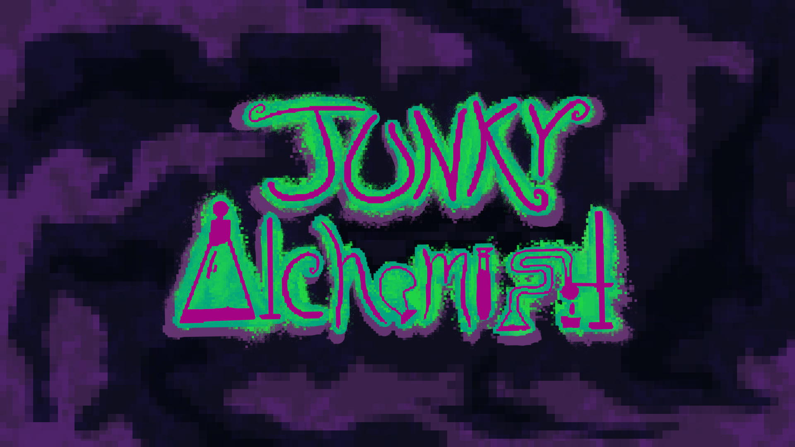

JUNKY ALCHEMIST
Junky Alchemist is a first-person potion-making game developed for a Game Jam, where the player must prepare randomized recipes under time pressure while managing limited psychoactive substances that temporarily affect movement, perception, and gameplay flow.
My Responsibilities
- Implemented the substance system with player movement, visual effects, inventory counters, and game-over logic.
- Built and connected the complete UI flow: main menu, HUD, order panel, warning screen, game-over screen, and win screen.
-
Migrated and unified features from
separate prototype scenes into the final
SampleScene. - Debugged scene merge issues, missing script references, duplicated systems, prefab configuration problems, and Unity UI asset setup.
Technologies: Unity, C#, Unity UI, Input System
JUNKY ALCHEMIST
Main Challenges & Solutions
One of the biggest challenges was merging different gameplay systems created in separate scenes. Player movement, potion mechanics, UI, and substance effects originally worked independently.
I reorganized the project around a single final
scene and carefully connected each system without
breaking existing functionality. The
GameManager became responsible for
coordinating the menu, HUD, orders, timer, and
general game state.
I also resolved UI integration problems, including missing script references, non-interactive menus, incorrect sprite import settings, HUD counters that did not update, and order panels appearing at the wrong moment.
These issues were solved by cleaning serialized references, using prefab-based UI elements, and centralizing gameplay and interface coordination through the GameManager.
What I Learned
- Scene and system integration
- Gameplay-loop architecture
- Unity UI coordination
- Prefab and serialized-reference debugging
- Collaborative Game Jam development